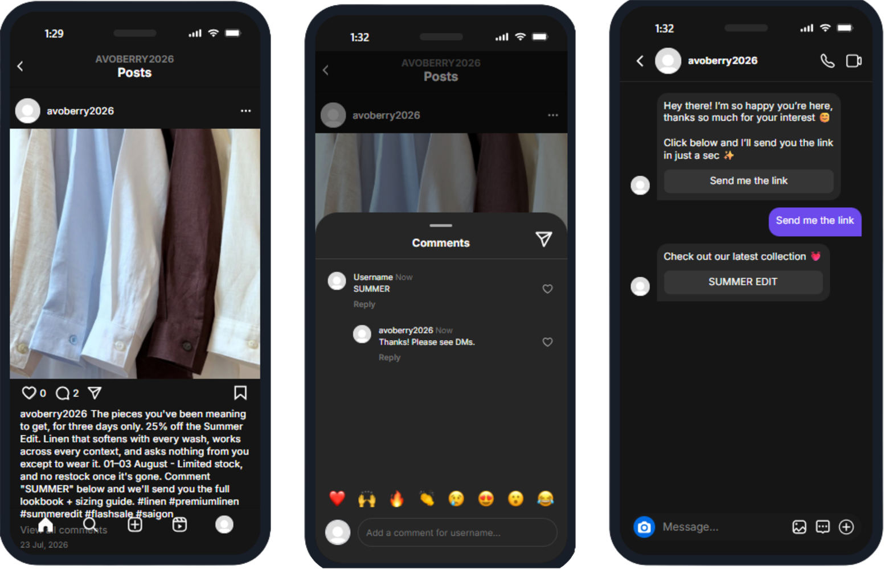

Strategy · Automation · AI creative
mai.premiumlinen
A social media strategy and content system for a one-person linen brand in Saigon: persona, funnel, 14-day plan, two automations, and AI-assisted video and carousel content.
Disclaimer: mai.premiumlinen is an existing brand that I don't own. I built the strategy, content and automations myself, based on the brand's public identity and its limits as a one-person business. Nothing was posted on the brand's accounts; all content is simulated. Product photos come from the brand's public posts. The owner has seen the full project and sent feedback (below).
Strategy
Who the content is for, what it has to achieve, and how the brand looks.
The goal
The plan starts from one business goal and one measurable social media goal.
Business goal
Build a loyal customer base among Gen Z students in Saigon by earning trust with honest and educational content.
Social media goal · by Q4 2026
- 15 → 60
- Instagram DM inquiries a month
- 12–15
- orders a month from those DMs
- 3
- posts a week: 2 short videos, 1 carousel, backed by Manychat and Make.com
Buyer persona
Every content idea is written for one person: a Gen Z student in Saigon who buys less, but better.
“I don't want more clothes. I want fewer things I actually love, and I want to know they were made with care, not just made cheap and fast.”Minh Trang · 20 · University student · Saigon, Vietnam
Goals
- A small, considered wardrobe
- Outfits that work for class & coffee dates
- Clothes from brands that are open about how they make them
- Light pieces that pack easily for travel
Pain points
- Linen creases too easily
- Tired of fast fashion
- Sustainable clothes don’t fit a student budget
- Not sure how to care for linen
Buying behaviour
- Researches before buying
- Buys less, chooses better
- Trusts real-life photos over studio shots
- Pays more for pieces she'll wear often
STDC Funnel
STDC (See, Think, Do, Care) is a strategy framework that maps content to each stage of the customer journey, from people who don’t know the brand yet to existing customers.
| Phase | Mindset | Goal | Channel & format |
|---|---|---|---|
| See | Scrolling, doesn't know the brand yet | Introduce the brand through a feeling, not a product pitch | TikTok & IG Reels (GRWM and café outfit videos) |
| Think | Interested, but unsure about creases, care and price | Answer doubts about linen and build trust | IG carousel & Threads (care guides, styling tips) |
| Do | Ready to buy a set for a trip | Create urgency and drive DM inquiries | IG post & DM funnel (flash sale, Manychat comment-to-DM) |
| Care | Proud owner, happy to share | Turn buyers into advocates | IG Stories & broadcast channel (customer reshares, early access) |
Three content pillars
A pillar is a recurring theme tied to the brand’s goals. Pillars keep the voice consistent and the content varied. I tag every content idea with one STDC phase and one pillar; the Content Cockpit does this automatically for new ideas.
Community · builds trust
Founder's journey, behind the scenes, customer reviews.
Product · drive sales
New pieces, fabric details, production process.
Education · earns attention
Dressing for the climate, care tips, why linen is a sustainable choice.
Rebrand and brand guidelines
I redesigned the logo and kept the brand’s original colours. I built the guidelines from a Canva template adapted to the brand, so every piece shares the same logo, type and colours.
Logo: before and after
- Logogram
- An abstract M of sharp angles and sweeping curves.
- Logotype
- Script “mai” for craft, spaced caps for precision.
- Lockup
- The name sits in the M's negative space, so both read as one.
Typography
Cormorant Garamond gives headings a calm, premium feel. Montserrat keeps body text easy to read on a phone. DM Serif Display sets customer quotes apart from the rest of the text.
Headings
Cormorant Garamond
Aa Bb Cc Dd Ee Ff Gg Hh
1234567890 !@#$%^&*()
Body
Montserrat
Aa Bb Cc Dd Ee Ff Gg Hh
1234567890 !@#$%^&*()
Quotes
DM Serif Display
Aa Bb Cc Dd Ee Ff Gg Hh
1234567890 !@#$%^&*()
Colour palette
Five earthy tones taken from natural linen carry the brand's personality and character. The palette balances function with intention and supports the brand's mission and promise.
Content
A two-week plan, the pieces I produced, and how I prompted them.
14-day content calendar
I produced the pieces marked “Produced”. The rest are planned and documented.
| Day | Phase | Pillar | Content | Format | Status |
|---|---|---|---|---|---|
| 1 | See | Education | Dressed for Saigon Heat | Short video | Produced |
| 2 | Think | Product | Linen Crease Dilemma | Carousel, 6 slides | Produced |
| 3 | Think | Product | Linen Crease Dilemma, Threads repost | Text + photos | Produced |
| 4 | See | Community | Founder: “Why master tailors, not a factory” | Carousel | Planned |
| 5 | Think | Education | Fabric care & styling tips | Carousel | Planned |
| 6 | See | Education | Travel capsule wardrobe | Short video | Planned |
| 7 | Do | Product | Flash sale launch | Feed post + Story + DM funnel | Produced |
| 8 | Do | Product | DM funnel auto-reply live | Manychat automation | Produced |
| 9 | Do | Product | Sale reminder, last 2 days | Story + countdown | Planned |
| 10 | Do | Product | Sale closes tonight | Story + countdown | Planned |
| 11 | Care | Community | Customer photo reshare | Story template | Planned |
| 12 | Care | Education | Styling tips for purchased pieces | Carousel | Planned |
| 13 | Care | Community | Exclusive drop preview | Broadcast message | Produced |
| 14 | Care | Community | Drop preview follow-up | Broadcast message | Planned |
Content I produced
Each video clip and carousel image used the same real product photo as a reference, so fabric colour and texture stay the same from frame to frame.
Tools
- Script & video clip prompts: Claude
- Clips: Google Flow
- Edit: CapCut
- Mockup: Canva

Tools
- Copy & image prompts: Claude
- Images: Gemini
- Mockup: Canva

Tools
- Copy: Claude
- Images: Gemini
- Mockup: Canva

Tools
- Copy: Claude
- Mockup: Canva

Tools
- Copy: Claude
- Mockup: Canva
All six carousel slides
Prompts and what I changed
One iteration per funnel phase: what the first result got wrong and how I fixed it.
See The café that looked European
- Problem
- Google Flow kept generating a European-style café for clip 4. The persona lives in Saigon, so the scene didn't fit her world.
- Revision
- Person sitting at an outdoor Vietnamese-style coffee shop, low plastic stool or rattan chair, small round table, camera focused on her from a side angle while two friends sit across facing away with only their backs / shoulders visible. Tropical Saigon street setting with motorbikes or narrow alley visible softly out of focus in the background, dappled shade from a tree or storefront awning, warm humid daylight, relaxed candid chatting mood, natural unposed body language, editorial minimal style, no text.
- Result
- After several rounds, the clip showed a recognisable Saigon sidewalk café: low stools, motorbikes, tropical light.
Think A carousel that read like an FAQ
- Prompt
- Create a 6-slide Instagram carousel explaining why linen wrinkles, aimed at a Gen Z student audience hesitant about the fabric. Keep the tone premium and minimal.
- Problem
- Correct, but too explanatory. It read like a fabric-care FAQ and the cover had no emotional hook.
- Revision
- Rewrite the final carousel slide so it leads naturally into a DM conversation, without sounding like a sales prompt.
- Result
- “Still unsure? Ask us anything” beat the first draft (“Have questions about linen care? Send us a message!”). Shorter, and more like an invitation than customer service.
Do A sale caption that was too pushy
- Prompt
- Write a sales caption for a 25% off linen sale targeting Gen Z. Tell them to comment to get a discount code.
- Problem
- It worked, but sounded too aggressive for a premium slow-fashion brand.
- Revision
- Refine the copy to maintain a calm, 'quiet luxury' tone. Emphasize limited small-batch production rather than cheap discounts to protect brand equity.
- Result
- Urgency now comes from small-batch production, not the discount. That fits the persona's values and still gives her a reason to act.
Care “You've earned VIP access!”
- Prompt
- Write an Instagram Stories template for resharing customer photos, and a broadcast channel message offering early access to past buyers.
- Problem
- The broadcast opened with “You've earned VIP access!”, which sounds like a loyalty program and doesn't fit the brand's quiet tone.
- Revision
- Remove any language that sounds like a loyalty program (VIP, earned, points). Reframe the broadcast message as a personal, quiet heads-up rather than a reward. Keep it short.
- Result
- Early access now reads as a personal note. It also keeps the Care phase apart from the Do phase, which already carries the discount.
All video clip prompts (Google Flow)
Every clip used the same real product photo as a reference.
Text overlays (Claude):
Carousel image prompts (Gemini)
Every generated image used the real product photo from slide 1 as its reference. Slides 2 and 3 needed a second prompt: slide 2 copied slide 1’s framing, and the fabric comparison on slide 3 looked artificial.
Automation
Two workflows that save a one-person brand time.
Comment-to-DM funnel
When someone comments “SUMMER” on the flash sale post, Manychat replies under the comment and sends a two-step DM: a greeting, then the sale link and size guide.
- TriggerA comment on the flash sale post.
- KeywordThe comment contains “SUMMER” or “summer”.
- Public replyManychat answers under the comment.
- Opening DMA greeting with a ‘Send me the link’ button.
- Follow-up DMCall to action with the sale link.
Tool switch. I planned this in Make.com, but Instagram limits comment triggers for third-party tools, so Make.com couldn’t watch comments on this account. I switched to Manychat, an official Meta partner built for comment-to-DM flows: the same call a solo owner would make when a tool can’t do the job.
Live test on a simulated account

Tested on @avoberry2026, a simulated account; images are placeholders.
Content Cockpit
Planning across three pillars and four funnel phases gets messy for one person. This Make.com scenario turns a running list of raw ideas in Google Sheets into a sorted content backlog.
- Idea addedThe founder adds a raw idea to the sheet.
- Gemini classifiesGemini suggests a format, platform, pillar, STDC phase and hook.
- JSON parsesMake parses the answer.
- Row updatesThe fields go back into the same row.
The sheet filling in by itself
Measurement
What I’d track to see whether the plan works.
KPIs by funnel phase
Each funnel phase has its own KPIs, so it's clear where the plan works and where it stalls.
| Phase | KPIs | Tool |
|---|---|---|
| See | Video views, watch time, follower growth, shares and saves | IG Insights, TikTok Analytics |
| Think | Carousel save rate, comments, Threads replies, profile visits | IG Insights, Threads Insights |
| Do | “SUMMER” comments, DM-to-click rate, DM-to-sale rate, sale orders | Manychat, store analytics |
| Care | Repeat purchases, customer reshares, orders from the broadcast channel | IG Insights, store analytics |
No tracking is live; these are the metrics the brand would watch once the plan runs. Two matter most each week: DM inquiries and repeat purchases, because they tie straight to the goal of 60 DMs and 12–15 orders a month.
What I learned
The plan changed on contact with the tools. Make.com couldn't watch Instagram comments, so I switched to Manychat and wrote down why. Google Flow needed several rounds before the café looked like Saigon.
For a one-person brand, a sustainable system matters more than more content: clear pillars, a few automations, and repeatable workflows.
If the brand grew, I'd hand off content production first and keep strategy and brand voice close.
Feedback from the owner
“[Owner's feedback]”Founder, mai.premiumlinen · translated from Vietnamese
AI use (labelled per EU AI Act, Art. 50). AI-generated: video clips (Google Flow), carousel images 2–5 (Gemini), first drafts of captions, DM scripts and broadcast copy (Claude), all refined by me. No AI: persona, STDC framework, goals, the real product photos, and the Manychat and Make.com screenshots.